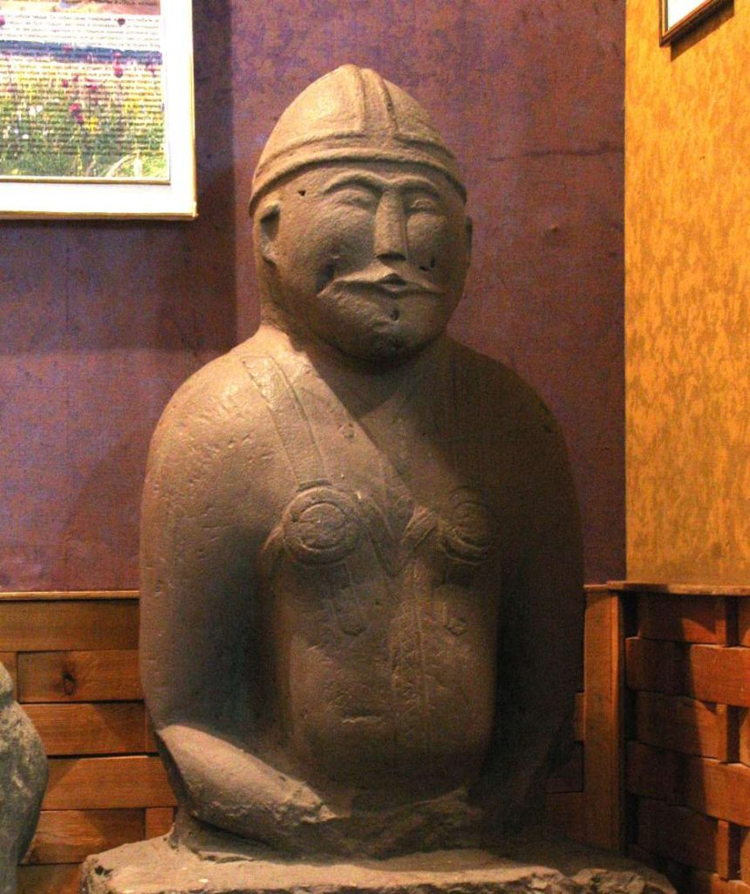

Территория Харцызска и подчиненные ему города Зугрэс, Иловайск, поселки Зуевка, Троицко-Харцызск занимают территорию около 20690 га. Эту территорию называем Харцызский край, есть еще одно неофициальное название — Большой Харцызск. Благодаря археологическим поискам и раскопкам, известно, что на территории Харцызского края люди появились в среднем палеолите (от «палайос» — древний и «литос» — камень) или древнекаменном веке в конце ашельской эпохи примерно 130 тысяч лет до н.э. Первобытные люди осваивали нашу землю все последующие периоды, несмотря на изменения климата и природные катаклизмы.
Во второй четверти II тысячелетие до н.э. сформировалась срубная культура. Памятки этой культуры — наиболее численные на территории Харцызского края. Свое название культура получила от традиции погребения покойников в специально построенных срубах в положении лёжа на спине, с согнутыми коленями. В июне 1971 года на дороге Харцызск-Ханженково, недалеко от кургана «Горила (Горихова) Могила» проводились раскопки погребения срубной культуры эпохи бронзы, датируемой 16 веком до н.э. В яме, облицованной каменными плитами, был обнаружен плохо сохранившийся скелет человека, бронзовый нож, два плоскодонных глиняных сосуда. В августе 1993 года в ходе совместной археологической экспедиции Донецкого областного краеведческого музея и музея истории города Харцызска был исследован курган, находящийся на высоком склоне правого берега реки Крынка (район Ханженковского водохранилища). В кургане находилось два погребения срубной культуры 14—13 веков до н.э., фрагменты глиняной лепной керамики и целые сосуды.
С поздней срубной культурой многие исследователи связывают племена киммерийцев. Это первый народ на территории нашего края, зафиксированный письменными источниками. В 7 веке до н.э. в степях появились скифы — кочевой народ, оставивший после себя многочисленные памятники. Со скифами связано и первое государственное образование на нашей земле. К 40-м годам 4 века до н.э. скифский царь Атей закончил объединение Скифии от Азовского моря до Дуная. Со скифами окончательно утвердился в степях железный век. В начале 3 века до н.э. гегемонию в степи почти на 500 лет захватили сарматские племена. Потом сарматов разгромили гунны и окончательно уничтожили готы. В период раннего средневековья территория нынешнего Харцызска входила в состав государственных образований кочевых народов, в частности — Хазарский каганат (7-10 в н.э.). Население занималось земледелием, скотоводством, разными ремеслами.
В середине 11 века в приазовские степи пришли половцы. Началась долгая борьба Руси с Половецкой степью. В то же время половцы (кипчаки) вместе с русскими воинами участвовали в княжеских усобицах, ходили с русскими князьями на Венгрию, Польшу, Волжскую Булгарию, заключали дипломатические браки с наследниками удельных русских князей. Вместе с русскими дружинами встали на борьбу с монголами. Тюркоязычные племена половцев оставили в степях яркие произведения средневекового искусства, ставшие своеобразной визитной карточкой и Харцызского края. Это половецкие скульптуры, более известное название которых «каменная баба». На территории поселка Троицко-Харцызск до недавнего времени находилось шесть каменных половецких изваяний. По сведениям местных жителей, много половецких скульптур было на территории посёлка Зуевка.